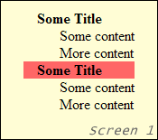
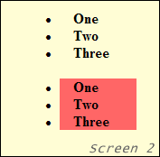

It’s another IE bug which is caused by placing a list with a background set within a floated <div> that has been relatively positioned. (IE doesn't mind if you set a background image, a color, or even both; they'll all disappear.) When these conditions are in place IE will display the background incorrectly. With me so far? Here are a couple of screen shots which should make it clearer:
 This is how IE renders a <dl> with a background set on the <dt>. None too impressive huh? I know, but what do you expect; this is IE we’re dealing with here!
div {
float: left;
position: relative;
width: 150px;
background: #fffdd5;
border: 1px solid #000; }
dt {
background: red; }
 This is how IE renders a <ul> with a background set on the <li>. On the first <ul> no backgrounds show, but on the second <ul> they do display. The same thing happens with ordered lists.
div {
float: left;
position: relative;
width: 150px;
background: #fffdd5;
border: 1px solid #000; }
li {
background: red; }
Just in case those screen shots weren't enough for you, here's an actual working example of this heinous bug side by side with a list displayed the way the W3C intended!
This is the bug in action. Notice that while the second <dt> has a background, the first has no background.
Here is the same code with a fix applied. All backgrounds present and correct! (read on for the fix)
Now obviously this bug is fairly uncommon, it’s not often you float a <div> and relatively position it. But saying that there are times when doing so comes in useful, mainly when absolutely positioning elements and for fixing other IE bugs... Okay, maybe it is common after all!
This bug gets even stranger than in the examples above, much stranger! For instance; the order the lists are placed and what type of lists they are affect the way the backgrounds display. Place a <dl> after a <ul> and it's backgrounds will display, but when placed before; only the first <dt> will display. If a background is set on <dd> then they will always be displayed, go figure.
Some other strange effects this bug produces are scroll and window painting. This is where the act of scrolling or moving a window over a color background will "paint" it. I've made a simple scroll/window painting example for you to peruse. (I used a little JavaScript to open up an alert box, so if you have that disabled just open up a new window yourself and use that).
Note that either a background image or a background color can be "painted" by window dragging, so this is consistent with the list background problem.
The good news is that this little bug is a cinch to eradicate. Just place the following code in your stylesheet and you'll never have to suffer through the indignity of disappearing list backgrounds again!
ul, ol, dl {
position: relative; }
Another way is to wrap the effected lists in a relatively positioned <div>, but as this adds extra, un semantic mark-up, it's best to just use the first method, which I've patented as the "1 point Smith manoeuvre".
Some other less than perfect ways to defeat this bug, listed mainly for informational purposes:
display: inline; on the list. (Works on <dl>s)This is a really strange and annoying bug to deal with. It took me a while to figure out just what the heck was going on and how to solve it. The biggest problem with this bug is just how variable it can be. The order in which the lists and other elements are placed have small but noticeable effects on the way they're displayed.
But despite this bug's variability, it's easily remedied, just declare
position: relative;
on all effected lists and you're good to go!
Matt Smith
silenus *at* rock dot com
Last updated: July 9, 2008
Created July 30, 2004